Figure 1. Cartoon of plum pudding model[9]
by
Orgho Neogi
A thesis submitted in partial fulfillment
of the requirements for the Doctor of Philosophy
degree in Physics & Astronomy in the
Graduate College of
The University of Iowa
May 2024
Thesis Committee: Name of Thesis Supervisor, Jane Nachtman
Yaser Onel
Milind Diwan
Mary Hall Reno
I have yet to see any problem, however complicated, which, when looked at in the right way did not become still more complicated.
Poul Anderson
ABSTRACT
Prior to your first thesis deposit, replace this text with the text of your scientific/ scholarly abstract. The text of this abstract should be double spaced and each new paragraph should be indented.
This abstract is required for everyone except DMA and MFA students.
PUBLIC ABSTRACT
Prior to your thesis deposit, replace this text with the text of your public abstract. The text of this abstract should be double spaced and each new paragraph should be indented.
This abstract is required for all thesis/dissertations. This abstract may be up to 250 words and should be written for a non-academic lay audience. In writing your public abstract, avoid jargon and technical language as much as possible.
The ability to communicate research simply and clearly is an important skill. The public abstract helps convey ideas beyond one’s immediate academic circle, facilitating communication with colleagues who do different kinds of work and possess different dimensions of training.
Think of your public abstract as your “elevator pitch” or what you might tell someone who asks, “What is your thesis about?” You may only have a few minutes to explain it to them while keeping their attention and using terminology you are sure they will understand without further lengthy explanation.
Another way to think of your public abstract is like the description you would read on the inside of a book cover.
I have yet to see any problem, however complicated, which, when looked at in the right way did not become still more complicated.
— Poul Anderson
People working in the field of high energy physics have a tendency to concern themselves with attempting to solve problems that are incredibly complicated. So, perhaps, there is a touch of irony that the problem that they are trying to solve is not only incredibly fundamental, but also very simple to state. The question can be boiled down to – what is the stuff in our universe made of? What immediately follows from this fundamental inquiry is - how is matter made up of these things? Or to put it another way, how do the fundamental building blocks interact?
In some sense, particle physics tries to distill matter and the interactions therein down to the smallest possible level to which it can be broken down. Turns out that breaking these concepts down to this elementary level of specificity is an incredibly complicated process of which we have merely begun to scratch the surface. As such, this paper focuses on a tiny fraction of these fundamental building blocks – the elusive neutrino with the hope of just perhaps being able to untangle some of the myriad of secrets that it harbours.
Before the protagonist 1 of our story - the neutrino - can be formally introduced, the stage has to be set. A good candidate to set the stage would be the standard model which describes three of the four known fundamental forces, electromagnetic, weak and strong interactions (it struggles to deal with gravity) and classifying all known elementary particles [1]. Just like any foundational theory that undergirds a sub-field of a subject, the standard model definitely wasn’t developed in a day and as such, it may behoove us to at least go over the high points of its development in order to have a better understanding of the context that surrounds neutrinos.
One may definitely quibble about where our understanding of the fundamental particles starts from, after all, humans have been trying to find out the nature of our universe and the things that make it up going back as far as the 4th century BCE with Plato positing that everything is made up of 4 elements (water, wind, earth and fire)[2], but I think it makes sense to start at the discovery of the first of the particles that made it’s way into the pantheon of the standard model; the electron.
For the longest time, humans had thought that atoms were the smallest particle that makes up everything in the world and cannot be subdivided further[3], but this idea had started to come under scrutiny by the late 1800’s[4]. Even then, it was thought that if anything were to make up atoms, they wouldn’t be lighter than the lightest atom [5]. However, in 1897, Thomson would come in with evidence that there not only were particles that made up the atoms, but that they were on the scale of 1000 times lighter than hydrogen[6]. He decided to shoot cathode rays at a thermal junction so he could measure the generated heat and measured how much they deflected magnetically. He also measured the electrical deflections by lowering the pressure in the chamber where he was measuring the deflection[7]. Through these experiments, he discovered the electron 2 and believed that it was a fundamental part of all atoms that was very light and held a decidedly negative charge[8].
The discovery of something so much smaller than the lightest atom threw Dalton’s atomic theory out the window. His theory claimed that everything in the universe was made up of atoms which would vary in size and mass based on the element . These atoms could not be created or destroyed, but could rearrange themselves through chemical reactions. It could be argued that Dalton’s model was a progenitor for the idea of conservation of mass and energy[3]. Despite being such an important idea, even before the discovery of electrons, the theory wasn’t foolproof; it could not account for isotopes of the same element having different masses. The electron blew the idea wide apart.
A new theory that looked at the atom not as the smallest thing that could exist, but rather something that had other things inside in some sort of structure had to be developed.
The first problem to grapple with was that electrons are negatively charged while the atoms themselves are electrically neutral. There were numerous models that tried to tackle this problem and one of the first was proposed by Thomson in 1904 as the plum pudding model.
To address this issue, the plum pudding model suggests that the electrons were suspended in a morass of positively charged particles 3 with the charge between the positive and negative equalling out to 0. Thomson believed that the mass was evenly distributed throughout the atom[6].
The plum pudding model struggled to explain how these charged particles were so copacetic with each other despite being such small physical distances apart. It was well known by then that opposite charges attract while alike charges repel [10]. It also failed to provide any explanation of the spectral lines observed in hydrogen[6]. Darker clouds were still on the horizon for Thomson’s plum pudding model.
Between 1906 and 1913, a number of alpha (α) particle scattering experiments were performed by Hans Geiger and Ernest Marsden under the supervision of Ernest Rutherford, Langworthy Professor of Physics at the Victoria University of Manchester. These are known to us today as the Rutherford scattering experiments. They designed experiments that involved firing a beam of α particles at metal foils of different thicknesses and materials to observe how the particles scattered in relation to the changes, although they ended up favoring gold foil for the experiments [11]. Based on the plum pudding model, it was expected that the α particles would not be deflected however, this turned out not to be the case at all. To be fair, most of the α particles did indeed go straight through the gold foil, their trajectory not disturbed in the slightest. A smaller fraction did get deflected, some by a small angle and others by a large one[12]. But the astonishing part was that an even smaller fraction, about 1 in 20000, shot right back at the direction the particle gun was shooting from[13].
So a new model was required to explain the discrepancies away. Rutherford looked at the gold foil experiments and developed a new theory on the substructure of the atom[15]. He proposed in 1911 that atoms were mostly just empty space with a highly concentrated segment of mass at the center of the atom – he called this central mass the nucleus of the atom. In Rutherford’s atomic model, the electrons orbit around the positively charged nucleus[16].
Only, two little problems. When things move in a circular orbit, they are accelerating. And if a charged particle is moving in an orbit like that, it should be constantly radiating energy. This would lead the particle to eventually falling into the nucleus, making this model of the atom unstable. It should also be emitting a continuous energy spectrum from the electrons, but hydrogen has discrete spectral lines[18].
Bohr tried to come at this from an angle that resolved the spectral line issue with Rutherford’s model. Bohr proposed that electrons move in fixed orbits, thus explaining the discrete lines of the hydrogen spectra and that atoms emit light when an electron jumps from a higher energy level to a lower one [19].
This still doesn’t explain away why the electron doesn’t collapse into the nucleus. However, it does a very good job of modelling hydrogen and hydrogen-like atoms under most normal conditions. The other issue with Bohr’s model is that it fails to address De-Broglie’s Hypothesis of the dual nature of matter. To get there, we have to delve into the wonderful world of quantum mechanics.
What led to the development of quantum mechanics was spirited debate about the true nature of light. Newton was one of the first to throw his hat into the ring; in 1672, he decided to build upon the corpuscular theory coined by Descartes, arguing that light was made up of discrete particles just like everything else[21]. Problem was, that around the same time Robert Hooke and Christiaan Huygens performed experiments that led them to believe light was in fact not a stream of particles, but rather a wave[22][23]. This wave view of light did a much better job of explaining how light refracted compared to Newton’s model.
The position of people believing that light was in fact a wave, not particles, got a lot stronger in 1801 thanks to double slit experiments by Thomas Young. This was an experiment where there were two slits cut into a screen and light was then shone through it being visible on another screen once it had made it past the slits. If light was indeed made up of particles, the expectation was that we would see essentially two bright spots on the final screen that corresponded to the two slits. Instead, what we got was an interference pattern that is typical of waves[24].
At this point, the world is pretty much in the wave camp for the purposes of modelling light, but the idea that light is made of particles was about to be revived from the dead by none other than Max Planck. He was trying to solve the problem of black body radiation; namely, that the energy carried by electromagnetic waves is emitted and absorbed in discrete quantities. His solution was to come up with the idea of discrete quanta rather than a continuously emissive spectrum. He did this through the creation of the what we call the Planck constant today (h), a proportionality constant that he called the quantum of action[26].
This was fundamentally the introduction of quantum mechanics, a quite contentious idea at the time, highlighted by the following quote from Bohr, as relayed by Werner Heisenberg[27].
”Those who are not shocked when they first come across quantum theory cannot possibly have understood it.”
— Neils Bohr
Despite being fraught in debate, the idea of quantum mechanics simply would not go away. Einstein would go on to build on the Planck’s ideas and proposed that light was made up of discrete packets of energy that he called light quanta[28], what we now call photons[29]. He developed the Planck-Einstein Relationship, connecting energy, E, the Planck constant, h, and the frequency of light, ν.
| E = hν | (1) |
This equation was to explain the results that Einstein had gotten from his experiments regarding the photoelectric effect[28]. In 1914, Robert A. Millikan went on to confirm Einstein’s idea by doing a highly accurate measurement of Plank’s Constant using the photoelectric effect[30]. Photons would go on to be included in the list of particles we deal with in the standard model today.
This new evidence flew in the face of the wave nature of light, which at this point had been longstanding. It seemed like there were phenomena that could be explained by thinking of light as a wave and other phenomena that could be understood if we looked at light as a particle. In 1924, Louis de Broglie entered the fray and decided to ask the question nobody had before. But why not both? He further worked on Einstein’s equation, ending up with
| hν0 = m0c2 | (2) |
Where h is the Planck constant, ν0 is the frequency, m0 is the mass while c is the speed of light in a vacuum. De Broglie went on to argue that the wave/particle dual nature was not just a thing for light, but rather for all matter[31].
This eventually led to Einstein’s famous equation
| E = mc2 | (3) |
Where E is energy, m is mass and c is the speed of light in a vacuum[32].
This work led to the de Broglie’s relationship between wavelength and momentum.
λ =  | (4) |
Where λ means wavelength, h is the Planck constant and p is momentum. This relationship can be thought of as a particle travelling through space as a wave packet[31]. This hypothesis was later confirmed through cathode ray diffraction and Davison-Germer experiment[33][34][35].
Erwin Schrödinger would go on to take the ideas developed by de Broglie and run with it. He thought that if all matter can be thought of as a wave packet, there must be a wave equation to describe them.
| iℏ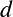 | = Ψ(r,t) | (5) |
Where
Ψ(r,t) stands for the wave function of the quantum system, which depends on both position r and time t.
i is the imaginary unit.
ℏ is the reduced Planck constant.
 denotes the partial derivative of the wave function with respect to time.
denotes the partial derivative of the wave function with respect to time.
∇2 is the Laplacian operator, representing the sum of second partial derivatives with respect to the spatial coordinates, indicating the kinetic energy term.
V (r,t) is the potential energy of the system, which may vary with position and time.
Thus the Schrödinger’s equation was born[36].
The Schrödinger equation would pave the way for the electron cloud model of the atom we use today, but there has to be a little more work to be done before we can get there. The next step in the journey relates to Heisenberg and his famous uncertainty principle. In Heisenberg’s model of the atom, he never explicitly talked about the physical position or momentum of the electron; definitely breaking with tradition. Instead, his theory focused on the observables of the electron, namely the frequency of light emitted or absorbed. He would go on to refine his uncertainty principle to state:
One can never know with perfect accuracy both of those two important factors which determine the movement of one of the smallest particles—its position and its velocity (or momentum). It is impossible to accurately determine both the position and velocity of a particle at the same instant.
— Werner Heisenberg,
Or to present the idea in math form,
| Δx⋅Δp | ≥ | (6) |
Where Δx stands for the uncertainty in position, Δp stands for the uncertainty in momentum, and ℏ represents the reduced Planck constant[37].
Max Born took the uncertainty principle and applied it to Schrödinger’s equation, leading him to interpret Ψ as a probability amplitude. Under this model, one could not know the exact positions of the electrons in an atom, but rather a probability of the electron being in a specific position at a specific time.
This can be visualized as a cloud of points surrounding the nucleus where the density of the dots indicates a higher probability of the electron being at a certain position.
Based on this model, electrons are in a state of quantum superposition until a spatial measurement is conducted. They don’t have fixed orbits, but rather orbitals corresponding to probabilities as can be seen for the hydrogen atom in figure 6. These orbitals surround a dense nucleus at the center of the atom.
We have looked a lot at the structure of the atom and what surrounds the nucleus, but what exactly does the nucleus contain? To do that, we have to go back in time a little bit.
In the early 20th century, it was understood that the nucleus, as proposed by Rutherford, was a dense central core of the atom. However, this model did not fully explain the mass of the nucleus nor the nature of its internal components. In 1917, Ernest Rutherford made a significant contribution by identifying the proton. His experiments with alpha particles bombarding nitrogen gas led to the discovery of a new particle. This was a positively charged particle in the center of the nucleus; What we call the proton today.
Despite Rutherford’s discovery of the proton, there remained a critical question: if the nucleus contained protons, why did it not have enough charge to account for the total mass of the atom? This discrepancy led to the hypothesis of the neutron, a neutral particle within the nucleus.
In 1932, James Chadwick provided the answer by discovering the neutron. His experiments involved bombarding beryllium with alpha particles and analyzing the resulting radiation. He observed that this radiation was not charged and had an equivalent mass to the proton, leading to the discovery of the neutron.
Between the proton and he neutron, the charge and mass of the nucleus could be explained. However, was that really the end of the rabbit hole or were there smaller parts that made up protons and neutrons?
In the mid-20th century, the field of particle physics faced mounting evidence suggesting that protons and neutrons were not elementary particles but had a more complex internal structure. Enter the quarks. The concept of quarks was introduced by Murray Gell-Mann and George Zweig independently in 1964. According to Gell-Mann’s model, protons and neutrons are composed of three quarks each. This was a significant departure from the previously held notion that protons and neutrons were indivisible.
Gell-Mann’s model was initially motivated by the observation of patterns among the particles known as baryons and mesons. Baryons (like protons and neutrons) were seen as composed of triplets of quarks, while mesons were seen as quark-antiquark pairs.
Around the same time, George Zweig proposed a similar idea independently, also introducing the concept of quarks. Zweig’s model was termed the “Eightfold Way” and shared many similarities with Gell-Mann’s model, though with some differences in the details.
The hypothesis of quarks gained experimental support in the 1970s with deep inelastic scattering experiments conducted at the Stanford Linear Accelerator Center (SLAC). These experiments probed the internal structure of protons by bombarding them with high-energy electrons. The results showed evidence of point-like particles within the protons, consistent with the quark model. The observed scaling behavior of the structure functions in these experiments provided strong evidence for the existence of quarks and their confinement within protons and neutrons.
Further confirmation of the quark model came from the discovery of additional types of quarks and the development of Quantum Chromodynamics (QCD). QCD provided a comprehensive framework for understanding how quarks are bound together.
Today, quarks are understood to be fundamental constituents of matter, forming the building blocks of protons, neutrons, and other hadrons (Composite subatomic particles that are made up of at least 2 quarks).
We have so far discovered 6 flavors of quarks – up ( ), down (
), down ( ), charm (
), charm ( ), strange (
), strange ( ), top
(
), top
( ), and bottom (
), and bottom ( ). Each flavor has different mass. These masses and their interactions with other
particles are crucial for the stability and properties of atomic nuclei.
). Each flavor has different mass. These masses and their interactions with other
particles are crucial for the stability and properties of atomic nuclei.
| Quark Flavor | Approximate Mass (MeV/c ) ) | Charge (e) |
| Up (u) | 2.2 - 3.0 | + |
| Down (d) | 4.7 - 5.0 | -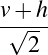 |
| Strange (s) | 95 - 105 | - |
| Charm (c) | 1270 - 1720 | + |
| Bottom (b) | 4180 - 4380 | - |
| Top (t) | 172000 - 173000 | + |
Quarks carry fractional electric charges. For instance, up quarks have a charge of  e, while
down quarks have a charge of
e, while
down quarks have a charge of  e, where e is the elementary charge. This fractional charge is essential
for the charge balance in particles such as protons and neutrons.
e, where e is the elementary charge. This fractional charge is essential
for the charge balance in particles such as protons and neutrons.
Quarks are never found in isolation due to a phenomenon known as confinement. They are always confined within larger particles called hadrons.
Quarks have a property called color charge, analogous to electric charge but related to the strong force. There are three types of color charges: red, green, and blue. The strong interaction, which is described by QCD, ensures that particles made of quarks are color-neutral.
For each quark flavor, there exists a corresponding antiquark with the opposite charge. Antiquarks can combine with quarks to form mesons, another category of hadrons.
Having gone over what quarks are, the interesting question to ponder is why do quarks stay together to form hadrons? Fundamentally, why can they not exist by themselves in a stable configuration? The answer to both of these questions is the strong force.
It is a fundamental aspect of QCD, which is the theory describing the interactions of quarks and gluons. Gluons are a massless particle that mediates the strong force and is part of the standard model.
The strong force is characterized by its incredibly short range but immense strength. It operates
effectively only at distances on the order of femtometers (1 fm =  meters).
meters).
One of the key features of the strong force is quark confinement, which means that quarks are never found in isolation. They are always bound within larger particles called hadrons. This is due to the nature of the strong force, which becomes stronger as quarks move farther apart. The potential energy associated with the strong force increases with distance, effectively confining quarks within hadrons.
The QCD Lagrangian, describes the strong force
 QCD QCD | = -FμνaF aμν+ i(iγμ(D μ)ij-mδij)ψj, | (7) |
where  is the field strength tensor for the gluon fields,
is the field strength tensor for the gluon fields,  represents the quark fields, 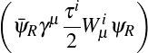
are the gamma matrices, and
represents the quark fields, 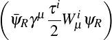
are the gamma matrices, and  is the covariant derivative that includes the gluon interaction. The
term 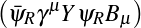 describes the dynamics of the gluon fields, and describes the
interaction between quarks and the gluon field.
is the covariant derivative that includes the gluon interaction. The
term 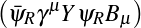 describes the dynamics of the gluon fields, and describes the
interaction between quarks and the gluon field.
Another fascinating property of the strong force is asymptotic freedom, which means that quarks interact more weakly at shorter distances. This phenomenon is described by the running of the strong coupling constant , which decreases as quarks come closer together:
| αs(Q2) | = , | (8) |
where  is the running coupling constant that depends on the energy scale
is the running coupling constant that depends on the energy scale  . At high
energies (short distances),
. At high
energies (short distances),  becomes smaller, indicating weaker interactions between quarks.
Conversely, at low energies (larger distances),
becomes smaller, indicating weaker interactions between quarks.
Conversely, at low energies (larger distances),  grows larger, leading to stronger interactions and quark
confinement.
grows larger, leading to stronger interactions and quark
confinement.
In practice, the strong force is responsible for the internal structure of hadrons. The force between these quarks is mediated by gluons, which continuously exchange color charge and bind the quarks together in a stable configuration. The interaction between quarks within hadrons can be described by the potential:
| V (r) | = -  +σr, +σr, | (9) |
where  is the strong coupling constant and is the distance between quarks. This potential is
known as the Cornell potential and illustrates how the force increases as quarks move further
apart.
is the strong coupling constant and is the distance between quarks. This potential is
known as the Cornell potential and illustrates how the force increases as quarks move further
apart.
Moving on to the other fundamental forces, the combination of electromagnetism and the weak force into one consistent theory was monumental in pushing physics forward.The journey towards electroweak unification began with the discovery of the weak force, a crucial interaction responsible for processes like beta decay. Early experiments revealed that the weak force was much weaker than electromagnetism and had a very short range. It was eventually understood that the weak force and electromagnetism were manifestations of a more fundamental interaction.
In the 1970s, Sheldon Glashow, Abdus Salam, and Steven Weinberg formulated the electroweak theory, which successfully unified these two interactions into a single theoretical framework. Their theory predicted the existence of the W and Z bosons, which mediate the weak force. The electroweak theory is based on the gauge symmetry group SU(2)L×U(1)Y .
The Lagrangian for the electroweak interaction can be written as
| EW | = - WμνiW
iμν- WμνiW
iμν- BμνBμν BμνBμν | (10) |
| +mW 2W μiWiμ+mZ2Z μZμ | (11) | |
- | (12) | |
-  | (13) | |
- | (14) | |
- | (15) | |
| +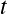 | (16) | |
+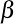 . . | (17) |
Where Wμνi represents the field strength tensor for the SU(2)L gauge bosons, Bμν is the field strength tensor for the U(1)Y gauge boson, mW and mZ are the masses of the W and Z bosons respectively, g is the SU(2)L gauge coupling constant, g′ is the U(1)Y gauge coupling constant, ψL and ψR denote the left- and right-handed fermion fields, τi are the Pauli matrices corresponding to the SU(2)L symmetry, Y represents the hypercharge of the fermion fields, and θW is the Weinberg angle.
The electroweak theory successfully predicted the masses of the W and Z bosons, which were experimentally confirmed in 1983 at CERN. The W bosons (W+ and W-) mediate charged current interactions, while the Z boson mediates neutral current interactions.
The path to the electroweak theory was marked by significant experimental and theoretical advances. In the 1930s, the discovery of the muon by Carl Anderson and Seth Neddermeyer introduced the idea that there were particles beyond the electron. Muons were soon identified as heavier cousins of electrons, leading to the development of the concept of lepton family.
In the 1970s, the discovery of the tau lepton, a particle even heavier than the muon, further expanded the lepton family. The tau lepton, discovered by Martin Perl and collaborators in 1975, was crucial in validating the electroweak theory. The existence of three generations of leptons (electron, muon, and tau) and their associated neutrinos was essential for the theory’s development.
The electroweak unification also prompted the search for new particles, such as the Higgs boson, responsible for giving mass to the gauge bosons. The discovery of the Higgs boson at the Large Hadron Collider in 2012 was a triumph for the Standard Model and confirmed the last missing piece of the electroweak theory.
Okay!
Finally!
The stage has been set! Time for our stars –the neutrinos– to make an appearence.
The story begins in the 1930s with Wolfgang Pauli, who first proposed the existence of neutrinos to solve a pressing problem in the field of beta decay. He addressed the puzzle of the missing energy in beta decay experiments. Beta decay is a process where a neutron decays into a proton, an electron, and an electron antineutrino:
where  is the neutron, is the proton,
is the neutron, is the proton,  is the electron, and
is the electron, and  is the electron
antineutrino. The problem was that the energy of the emitted beta particle (electron) and the proton did not
add up to the total energy of the decaying neutron, leading to what seemed like a violation of energy
conservation.
is the electron
antineutrino. The problem was that the energy of the emitted beta particle (electron) and the proton did not
add up to the total energy of the decaying neutron, leading to what seemed like a violation of energy
conservation.
To deal with this, Pauli proposed the existence of a new, neutral particle that carried away the missing energy. 4 Fermi incorporated the neutrino into his theory of beta decay, which became known as Fermi’s theory of beta decay. His theory elegantly explained the conservation of energy and angular momentum in beta decay processes.
The neutrino, denoted by , is a nearly massless and electrically neutral particle. The interaction of neutrinos is governed by the weak force
For many years, neutrinos were a theoretical construct until they were finally observed experimentally by Clyde Cowan and Frederick Reines in 1956. Their detection was achieved by capturing neutrinos emitted from a nuclear reactor and observing their interactions with a detector filled with water and cadmium chloride.
The weak interaction is described by the exchange of W and Z bosons, which mediate processes like beta decay.
The 1960s introduced a new chapter with the discovery of the muon neutrino, νμ. The experiment conducted by the Brookhaven National Laboratory used a beam of pions, which decay into muons and muon neutrinos:
| π+ → μ+ +ν μ | (18) |
Here, π+ is the positively charged pion, μ+ is the muon, and νμ is the muon neutrino. In 1962, the collaboration led by Martin LPerl and his team at the Stanford Linear Accelerator Center (SLAC) confirmed the existence of the muon neutrino by observing interactions consistent with νμ.
The next breakthrough in neutrino physics came in 1975 with the discovery of the tau neutrino, ντ. The relevant interaction can be expressed as:
| τ+ → ν τ+ℓ+ | (19) |
where τ+ is the positively charged tau particle, ντ is the tau neutrino, and ℓ+ represents a lepton like a positron. The detection of the tau neutrino was more challenging due to its lower production rates and the complexity of distinguishing it from other neutrinos. These discoveries not only confirmed the existence of the muon and tau neutrinos but also led to the realization of the three-flavor neutrino model in the Standard Model.
In the early days of neutrino physics, the Standard Model treated neutrinos as massless particles but experimentally we know that they have some amount of mass. Just a very tiny amount. Not only do we not really know the masses of the neutrinos, the ordering of their masses is still an open question.
For the mass ordering of neutrinos, we need to delve into the concept of neutrino mass eigenstates and flavor eigenstates. Neutrinos are produced and detected in flavor eigenstates (denoted by νe, νμ, and ντ), but they propagate as mass eigenstates (ν1, ν2, and ν3). The relationship between these states is governed by the PMNS (Pontecorvo-Maki-Nakagawa-Sakata) matrix, which can be written as:
=  | (20) |
The mass eigenstates ν1, ν2, and ν3 have different masses, but their exact ordering is not yet definitively known. There are two possible orderings for these masses:
Normal Ordering (NO): In this scenario, the masses of the neutrinos are ordered as
 . This implies that the third eigenstate, ν3, has the highest mass. The mass differences
between these states are described by:
. This implies that the third eigenstate, ν3, has the highest mass. The mass differences
between these states are described by:
| Δm212 | = m22 -m12 | (21) |
| Δm322 | = m32 -m22 | (22) |
| Δm312 | = m32 -m12 | (23) |
Inverted Ordering (IO): Here, the masses are ordered as 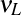. In this case, the lightest eigenstate is ν3. The corresponding mass differences are:
| Δm212 | = m22 -m12 | (24) |
| Δm322 | = m22 -m32 | (25) |
| Δm312 | = m12 -m32 | (26) |
Determining the correct mass ordering is essential for understanding the properties of neutrinos and has profound implications for cosmology and particle physics.
Neutrino oscillation is a quantum phenomenon whereby a neutrino created with a specific lepton flavor can change into another flavor as it propagates through space. This behavior is a direct consequence of the fact that neutrinos have mass and the flavor eigenstates.
The flavor states  (
( ) are related to the mass states
) are related to the mass states  (
( ) through a
unitary transformation. This transformation can be expressed as:
) through a
unitary transformation. This transformation can be expressed as:
| |να⟩ | = ∑iUαi|νi⟩, | (27) |
where  are elements of the PMNS matrix, which is a unitary matrix describing the mixing
between the flavor and mass eigenstates.
are elements of the PMNS matrix, which is a unitary matrix describing the mixing
between the flavor and mass eigenstates.
When a neutrino is produced in a flavor eigenstate, it propagates as a superposition of mass
eigenstates. If we denote the neutrino state produced at  as , its time evolution in terms of the
mass eigenstates is given by:
as , its time evolution in terms of the
mass eigenstates is given by:
| |να(t)⟩ | = ∑iUαie-iEit|ν i⟩, | (28) |
where  is the energy of the mass eigenstate
is the energy of the mass eigenstate  , and
, and  is the time of propagation.
is the time of propagation.
The probability of detecting a neutrino of flavor  after a time 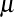 is given by the squared
modulus of the amplitude:
after a time 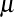 is given by the squared
modulus of the amplitude:
| P(να → νβ;t) | =  2 2 | (29) |
=  2. 2. | (30) |
Assuming the mass differences between the neutrino mass eigenstates are small compared to their
energies, and using the approximation  , we can simplify the expression for the
oscillation probability. The oscillation probability for a two-flavor scenario (
, we can simplify the expression for the
oscillation probability. The oscillation probability for a two-flavor scenario ( and
and  ) is given
by:
) is given
by:
| P(να → νβ;L) | = sin2(2θ)sin2 , , | (31) |
where  is the mixing angle between the two flavors,
is the mixing angle between the two flavors,  is the mass-squared
difference, 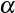 is the distance traveled by the neutrino, and is the neutrino’s energy.
is the mass-squared
difference, 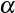 is the distance traveled by the neutrino, and is the neutrino’s energy.
To understand the nature of neutrino masses, it is crucial to delve into two different types of neutrinos; Dirac and Majorana. So a new model was required to explain these discrepancies, and in comes Dirac. Dirac, in 1928, extended his theory to include neutrinos, proposing that they were Dirac fermions. According to Dirac’s theory, neutrinos have distinct antiparticles, and their masses arise from the Higgs mechanism, similar to other fermions. In the Dirac framework, the Lagrangian for neutrinos can be written as:
| Dirac | = L(iγμ∂ μ-mν)νL, | (32) |
where  denotes the left-handed neutrino field,
denotes the left-handed neutrino field,  its Dirac adjoint, and is the Dirac mass
term.
its Dirac adjoint, and is the Dirac mass
term.  and its antiparticle are distinct entities.
and its antiparticle are distinct entities.
Then comes Majorana, who proposed in 1937 a different theory to account for neutrino masses. Majorana suggested that neutrinos could be their own antiparticles, which leads to the Majorana condition. In this framework, neutrinos are described by Majorana fermions. The Majorana Lagrangian is given by:
| Majorana | = Lc(iγμ∂ μ-mν)νL, | (33) |
where 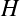 is the charge-conjugated field of . The Majorana mass term explicitly breaks the lepton number conservation, which is a key difference from the Dirac case. Lepton number conservation is the principle that the total number of leptons minus antileptons remains constant in a physical process. Majorana neutrinos are their own antiparticles, and their mass term is of the form:
| Majorana mass | = - mν(νLT Cν
L), mν(νLT Cν
L), | (34) |
where is the charge-conjugation matrix.
The actual nature of neutrino masses—whether Dirac or Majorana—has significant implications for our understanding of fundamental particles and the symmetries of the universe.
The detection of neutrinos is a crucial aspect of understanding nuclear reactions and the fundamental structure of matter. The discovery of neutrino oscillations not only confirmed that neutrinos have mass but also opened up new avenues for research, such as the precise determination of the neutrino mass spectrum and the investigation of the potential for CP violation in the lepton sector. Ongoing research aims to further understand their properties, including their masses, their role in the universe’s matter-antimatter asymmetry, and potential new physics beyond the Standard Model.
In order to study them experimentally, we have to actually be able to detect them – a task made complicated by the fact that neutrinos only interact with the weak force. Trillions of neutrinos go through us humans every second and we don’t notice because they don’t really interact with us, instead passing right through.
Just as there are many ways to skin a cat, neutrinos can be detected using a number of detector technologies. Each method harnesses different physical principles and technological advancements to observe these elusive particles.
Cherenkov detectors exploit the phenomenon of Cherenkov radiation, which occurs when a neutrino interacts with a medium at speeds greater than the speed of light in that medium. This results in the emission of a faint blue light, which can be detected and analyzed.
The Super-Kamiokande detector in Japan uses a large tank filled with ultra-pure water. It contains thousands of photomultiplier tubes that detect the Cherenkov radiation produced when neutrinos interact with the water.
Water Cherenkov detectors are a type of Cherenkov detector specifically utilizing water as the detection medium. These detectors are characterized by their large volumes of water and arrays of photomultiplier tubes (PMTs) arranged around the tank.
The IceCube Neutrino Observatory at the South Pole uses a cubic-kilometer array of detectors embedded in the Antarctic ice, capturing Cherenkov radiation from high-energy neutrinos.
Scintillation detectors use materials that emit light when excited by the passage of a high-energy particle. Neutrinos interact with a scintillator material, causing it to emit flashes of light, which are then detected by photodetectors.
The NOVA detector utilizes a liquid scintillator to detect neutrinos over long baselines, aiding in the study of neutrino oscillations.
Radio detectors capture the radio waves emitted by neutrino interactions in ice or other materials. This method is particularly useful for very high-energy neutrinos.
The ANITA (Antarctic Impulse Transient Antenna) experiment detects high-energy neutrinos via the radio waves produced by neutrino interactions with the Antarctic ice.
Liquid Argon Time Projection Chambers (LArTPCs) use liquid argon as both the detector material and the medium for drift electrons generated by neutrino interactions. The drifted electrons are then collected and analyzed to reconstruct the interaction.
The spatial resolution in LArTPCs depends on the drift length  , drift field
, drift field  , and the electron
mobility .
, and the electron
mobility .
The DUNE (Deep Underground Neutrino Experiment) will use LArTPCs to study neutrino properties with high precision, particularly in the context of long-baseline neutrino oscillation experiments.
DUNE is a groundbreaking experiment designed to investigate neutrino properties by utilizing an innovative approach involving a large detector placed deep underground. The primary goal of DUNE is to study neutrino oscillations DUNE’s experimental setup involves a neutrino beam generated from a high-intensity proton accelerator at Fermilab in Illinois. The beam travels through the Earth to a massive detector located approximately 1,300 kilometers away, deep underground at the Sanford Underground Research Facility (SURF) in South Dakota. The large scale of the detectors allows for the precise measurement of neutrino interactions, and its underground location minimizes interference from cosmic rays, thus improving the sensitivity of the experiment.
The plan is to have 2 sets of detectors, one at Fermilab, (near detector(ND)) and the other at SURF (far detector (FD)). The design of the DUNE far detector, grounded in cutting-edge Liquid Argon Time Projection Chamber (LArTPC) technology, is set to revolutionize particle physics. This detector will be housed in a colossal volume of 70 kilotons of liquid argon, buried 1.5 kilometers underground. To maximize the efficiency of physics experiments, the design splits this volume into four LArTPC modules, each with a usable ”fiducial volume” of 10 kilotons, avoiding interactions near the edges. To accommodate these massive detectors, approximately 800,000 tons of rock will be excavated, creating vast underground caverns.
The near detector will be built on the Argon cube concept. The ND will have a modular design combined with a novel pixellated charge readout. Previously, large detectors struggled with high demands for drift potentials and argon purity, which often led to risks of electric breakdown and purity losses. By breaking down a large detector into smaller, independent modules, these risks are significantly reduced. This modularity allows for easier maintenance and more reliable operation.
The fully pixelated charge readout adds another layer of sophistication, enabling precise event topology reconstruction. This is important for handling high-multiplicity environments where pile-up could otherwise obscure important data. Additionally, each module captures scintillation light to provide accurate timing information for neutrino events, further enhancing the detector’s performance.
The real game-changer is the scalability of this design. The modular approach means that the detector can be expanded to accommodate a very large active mass, opening up new possibilities for research and application.
Because of the novelty of the technology, a scaled down prototype of the Argon cube detector called the 2×2 has been built. Instead of having 5×7 modules, it will have2×2 modules. Individual modules have already been built and tested before being put together to take data as part of a set.
The scale of DUNE and its ambitious goals are reminiscent of the dramatic shifts in scientific paradigms brought about by the discovery of subatomic particles that challenged existing theories.
When looking at artificial intelligence (AI), everything falls on a spectrum from easily explainable to being a black box when thinking about how the machine makes it’s decisions. On the easily explainable side of things, we have things like decision trees.
A decision tree is where we sort the data by asking a sequence of questions and following the flowchart down to where it leads. By the time we are at the bottom of the tree and have classified the data we can say exactly how the model does it’s classification. For instance if a decision tree is used for mortgage decisions and the model says no, we can query and learn that it said no because you had too low income or too low credit score for instance.
By contrast, a machine learning model like a neural net is almost a black box with regards to how the decisions are made. We can query the model and ask it what it made its decisions based on, however, the features it picks out often isn’t decipherable to humans in any way. As in the previous example, if the answer to a mortgage is no, we have no real idea why the model made that decision. That being said, neural networks are often able to come up with better outcomes for classification that simple models like decision trees are. In the mortgage example, even if the neural net can’t tell us how it comes to the conclusion of approving a loan, it is still more likely to be able to better tell who will be a good credit risk compared to the decision tree. That’s often the trade off that we make when deciding on a more opaque model. That’s why even though they are opaque in how they come up with their answers we still rely on them so heavily. Because we can empirically test through monte-carlo studies how well they perform both in term of efficiency as well as how often these models misidentify the data that we are throwing at it.
While a neural network is opaque about how the decisions are made, the model itself doesn’t have to be a black box for us. We can take a peek under the hood and see how these models work. To do so, we start up from the basic models like a perceptron and work our way to a graph neural network, finally connecting it to how neutrino reconstruction works.
A lot of things that seem incredibly easy to humans – such as recognizing the difference between say a cat and a dog – are very difficult for computers to do. What makes it difficult to make that sort of classification is that it is hard for humans to define concrete rules about what makes the picture of a cat different than the picture of a dog. Neural nets approach this in a completely different fashion.
Instead of trying to define rules about the features that differentiate the picture of a dog vs a cat, we instead classify a whole bunch of pictures by hand. 5 Then throw those pictures at the algorithm with the correct answers and over time the computer learns to tell the difference between that of a dog and a cat. We call an algorithm like this that separates things into two piles a binary classifier. There are many different kinds of binary classifiers with a whole host of advantages and disadvantages but we will start with one that is simple to understand; the perceptron.
A perceptron takes a number of inputs that are binary in nature and produce a single binary output ie.is this a dog? The figure 14 has 3 inputs (x1, x2 and x3) although, more or fewer inputs may be used. Each input then is given a weight – w1, w2 and w3 in this case – and the output calculated thus.
y =  | (35) |
Used in this fashion, a perceptron can only make simple choices. Raising the threshold makes the classification tighter while lowering it loosens the classification. Because the output of a perceptron is binary, for more subtle distinctions, we can use the output of a perceptron to feed into the input of the next one thus creating a network that is more able to measure subtlety.
Varying the weights of the inputs in combination with the threshold for the output allows us to get different models of classification. The neurons in the first layer are only able to make simple decisions based on the raw input but because we use their output as the input to the second layer, the second layer can make more abstract decisions with a degree of subtlety impossible not only with one perceptron but also with even a single layer of perceptrons. The complexity of the discrimination by the classifier increasing with both the number and layers of perceptrons in the network.
With the correct weights and threshold values, we can get any binary classifier we want using a set of perceptrons. That, however, puts us back at our original problem of classifying whether something is a dog; namely, if we knew what features to look for (i.e. what weights and threshold to use) it wouldn’t be hard explaining to a computer what a dog was. The true innovation comes with using learning algorithms that don’t require input from the programmer to set these weights and thresholds.
If we want to use algorithms that can adjust weights and thresholds (otherwise called biases) automatically, we need some method where a small change in the weight only causes a small change in the output. Because perceptrons are binary, this is impossible to do with only perceptrons.
A small change in the weight to an input to the perceptron can flip the output entirely. While this small change in weight can make one of the outputs of the network better, it may also affect the rest of the network behave in unpredictable ways. Going back to the dog and cat example, while changing the weight slightly may make it better at recognizing dogs, it may wreak havoc on how cats are identified.
This is where sigmoid neurons come in.
While perceptrons are effectively step functions, flipping from 0 to 1, sigmoids are more smoothed out. This means that a small change in the weight can lead to a small change in output. The sigmoid function can be written as
σ =  | (36) |
This means that a sigmoid neuron can be written as
| (37) |
where the b stands for the bias of every input. While this looks different than the perceptron at first glance it is just a more smoothed out version of it. One key thing that we lose with the introduction of sigmoids is the linearity that perceptrons afforded us. What we gain is the ability for our programs to automatically adjust their weights and biases because a small change in weights does lead to small change in output as shown in equation 38.
| Δy ≈∑i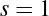Δwi+Δb | (38) |
More than the exact formula of the sigmoid neuron what matters is the shape. As a result, other neurons can be used in it’s stead which retain the property of having a small change in weight lead to a small change in output. Some of the more popular of these functions (called activation functions) are RELU and softmax. Each have their own advantages and disadvantages and may even be mixed in the same neural network
One drawback of the sigmoid function is that its gradients can become very small for large positive or negative inputs, leading to the vanishing gradient problem during backpropagation. Backpropagation is an optimization algorithm used to minimize the error of neural networks by calculating the gradient of the loss function with respect to each weight through the chain rule and updating the weights accordingly.
The hyperbolic tangent function is another activation function that provides output values between -1 and 1. It is defined as:
| tanh(z) = 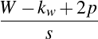 | (39) |
In a neural network, a neuron with the tanh activation function computes:
| tanh(∑iwixi+b) = | (40) |
The tanh function is zero-centered, which helps in making the learning process faster and more efficient compared to the sigmoid function. It also suffers from the vanishing gradient problem, though it generally performs better in practice than sigmoid.
The Rectified Linear Unit (ReLU) is a widely used activation function in deep learning models. It is defined as:
| ReLU(z) = max(0,z) | (41) |
For a neuron using ReLU, the output is computed as:
| ReLU(∑iwixi+b) = max(0,∑iwixi+b) | (42) |
ReLU introduces non-linearity while being computationally efficient. It helps mitigate the vanishing gradient problem by allowing gradients to flow more easily through the network. However, it suffers from the ”dying ReLU” problem where neurons can sometimes become inactive and only output zero.
To address the dying ReLU problem, the Leaky ReLU function introduces a small, non-zero gradient for negative inputs. It is defined as:
Leaky ReLU(z) =  | (43) |
where is a small constant (e.g., 0.01).
For a neuron using Leaky ReLU, the output is:
| Leaky ReLU(∑iwixi+b) = 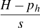 | (44) |
The Exponential Linear Unit (ELU) is designed to combine the benefits of ReLU and Leaky ReLU while addressing their limitations. It is defined as:
ELU(z) =  | (45) |
where  is a positive constant.
is a positive constant.
For a neuron using ELU, the output is:
| ELU(∑iwixi+b) = | (46) |
ELU can help speed up learning and improve robustness to noise by reducing the impact of vanishing gradients.
A number of these sigmoid neurons (or neurons with other activation functions) can be strung together to make a neural network. Each neural network has 3 main parts.
First, we have an input layer. This is all the inputs that go into a neural network and is usually represented as a vector. Each input adds one to the dimension of the input vector. Even something like a 2d picture can have its rows stitched together to make one long vector of inputs.
The middle bits are called the hidden layer, not for any profound reason, but just to distinguish them from the input and output layers. You can have as many hidden middle layers as you want in the network. The trade off is usually one of efficiency and accuracy. The more hidden layers you have, the more accurate the output will bebut at the cost of requiring more time to train because there are more weights to get right. After a point, adding more layers does not improve accuracy in meaningful way while still taking longer to train. This makes creating a good neural net less of a hard science and more of an art form.
Finally, we have the output layer. This layer usually has one neuron for each thing the classifier can bin the input into. In the dog and cat case, we would have 2 output neurons, one that signifies dog and the other cat. However, the neurons won’t directly tell us whether the picture contains a dog or a cat but rather give us two values. One of these values indicates how likely it is for this picture to contain a cat and the other represents the likelyhood that the picture contains a dog. After that, it is still up to us to decide on cutoff values to determine whether we will say the picture contains a cat, a dog, both or neither.
So far we’ve talked about the fact that weights and biases can be adjusted and that it only works if a small change creates only a small change in output while glossing over how exactly the computer automatically calculates these weights. Time to peel back that layer! 6 We use a technique called gradient descent.
To start off, we need a set of inputs x where we already know the answers y. This is called the training dataset. Once the weights and biases are adjusted we can then use the model to query a set of inputs that we don’t know and be reasonably certain that it won’t give us garbage outputs. To do this adjustment, we need to define a cost function.
C(w,b) =  ∑x||y(x)-a||2 ∑x||y(x)-a||2 | (47) |
Where n is the number of training samples and a is the vector of outputs from the network. We want a set of weights that make the cost as small as possible and we can do that through a method called gradient descent. The function described here is not the only cost function possible but is a simple one to start with. To use gradient descent, we can do
| Δv = -η∇C | (48) |
where v is the set of weights and biases and η is the learning rate. The more aggressive we set η the quicker training will go, but it may end up actually increasing the cost function. So we want an η that is small but not too small.
Convolutional Neural Networks (CNNs) are a specialized class of neural networks designed for processing data with grid-like topology, such as images. They are particularly effective for image classification and object detection due to their ability to capture spatial hierarchies in data. A CNN typically consists of several key layers: convolutional layers, activation layers, pooling layers, and fully connected layers. Let’s break down each layer and its role in the network.
Convolutional Layer
The convolutional layer is the cornerstone of a CNN. It applies a set of filters (or kernels) to the input image to produce feature maps. Each filter is a small matrix that slides over the input image to compute a dot product.
Given an input image of size  (height and width
(height and width  ) and a filter
) and a filter  of size
of size
 (height
(height  and width ), the output feature map
and width ), the output feature map  can be computed using the convolution
operation:
can be computed using the convolution
operation:
| O(i,j) | = ∑m=0kh-1∑ n=0kw-1I(i+m,j+n)⋅K(m,n) | (49) |
| = (I *K)(i,j) | (50) |
where 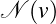 denotes the convolution operation. The dimensions of the output feature map depend
on the stride 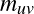 and padding  . If we use zero-padding and stride
. If we use zero-padding and stride  , the dimensions
are:
, the dimensions
are:
| Hout | = +1 | (51) |
| Wout | = +1 | (52) |
Activation Layer
The Rectified Linear Unit (ReLU) is one of the most commonly used activation functions in CNNs.
This activation function helps in mitigating the vanishing gradient problem and speeds up training.
Pooling Layer
The pooling layer reduces the spatial dimensions of the feature map, which helps in reducing
computational complexity and preventing overfitting. The most common pooling operation is max
pooling. For a pooling window of size  and stride
and stride  , the max pooling operation is defined
as:
, the max pooling operation is defined
as:
| Opool(i,j) | = maxm∈[i:i+ph],n∈[j:j+pw]OReLU(m,n) | (53) |
where  is the feature map after applying the ReLU activation. Pooling reduces the
dimensions of the feature map:
is the feature map after applying the ReLU activation. Pooling reduces the
dimensions of the feature map:
| Hout | =  +1 +1 | (54) |
| Wout | =  +1 +1 | (55) |
Fully Connected Layer
The fully connected layer (FC layer) is typically used at the end of the network to produce the final classification results. It connects every neuron in the previous layer to every neuron in the current layer. The output of a fully connected layer is computed as:
| zj | = ∑i=1Nw ijxi+bj | (56) |
where  are the weights,
are the weights,  are the inputs from the previous layer, and is the bias. This
results in a vector of size equal to the number of classes, which can be fed into a softmax function for
classification:
are the inputs from the previous layer, and is the bias. This
results in a vector of size equal to the number of classes, which can be fed into a softmax function for
classification:
| Softmax(zj) | =  | (57) |
These layers work together to learn hierarchical features from raw data, making CNNs highly effective for various image processing tasks.
Graph Neural Networks (GNNs) extend neural network methodologies to handle data represented in the form of graphs. GNNs are designed to work with the complex, non-Euclidean structure of graphs. Graphs consist of nodes (or vertices) and edges (connections between nodes), and GNNs leverage these structures to learn representations of nodes and their relationships.
To understand how GNNs function, it’s important to break down their key components: node features, edge features, and the message-passing mechanism.
In a graph, each node can have associated features, which are typically represented as vectors. If
we denote the feature vector of node  as
as  , then the node features for all nodes in the
graph can be organized into a matrix
, then the node features for all nodes in the
graph can be organized into a matrix  , where each row corresponds to a node’s feature
vector.
, where each row corresponds to a node’s feature
vector.
Similarly, edges in a graph can also have features. For an edge connecting nodes  and
and  , we
denote the edge features as 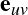. These features can be organized into an edge feature matrix
, we
denote the edge features as 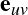. These features can be organized into an edge feature matrix
 .
.
The core idea of GNNs is the message-passing mechanism, which allows nodes to aggregate information from their neighbors. This process involves the following steps:
Message Computation: For each node  , we compute messages from its neighboring nodes
, we compute messages from its neighboring nodes
 . The message
. The message  from node
from node  to node is typically computed using a function
to node is typically computed using a function
 , which can depend on the features of both nodes and the edge between them:
, which can depend on the features of both nodes and the edge between them:
| muv | = ϕ(hu,hv,euv) | (58) |
| = ϕ(hu,euv) | (59) |
Aggregation: After computing the messages, each node aggregates the messages from its
neighbors. The aggregation function  could be a sum, mean, or a more complex
operation:
could be a sum, mean, or a more complex
operation:
| mv | = AGGu∈ (v)muv (v)muv | (60) |
Update: The aggregated message is then used to update the node’s feature vector. This update function often involves a neural network layer like a fully connected layer or a more complex function:
| hv′ | = UPDATE(hv,mv) | (61) |
The updated feature vector  represents the new state of the node after considering its
neighbors.
represents the new state of the node after considering its
neighbors.
Different GNN architectures can use various choices for the aggregation and update functions.
Graph Neural Networks allow for the processing of graph-structured data by iteratively updating node features through message passing. This approach allows GNNs to capture complex relationships between nodes and learn meaningful representations that are useful for various tasks such as node classification and graph classification.
Developing a neural net isn’t just about figuring out the neurons for the network and adjusting the weights. The task of making a neural net can be broken up into 3 main parts.
The first step of any kind of model development is looking at both what kind of data is available as well as what kind of input we might want to make on the model. The data may be scattered about in many places and often will require processing before it can be vectorized.
In the context of neutrino reconstruction, this may require running monte carlo simulations with standard software e.g. (LArSoft, NDsim) and then taking the output from those simulations, processing it into standard images that libraries like pytorch or tensorflow can take as input. It is also important to think about standardizing the size of those images and thinking about how to toss out the sheer amount of data that has no hits in it because neutrino events are so sparse.
Once that has been done, we can look at actually implementing a neural network based on that data. This involves setting out training pipelines which will determine how the data flows, as well as figuring out the structure of the network that will be made. Tests also have to be written for the network so that it can be deployed robustly. Once the training with the training dataset is complete, the model has to be validated with a validation dataset. The validation set will also be a set where the answers are previously known so we can see how well the model performs on data that it hasn’t previously been run on.
Once the model has been validated, it can finally be deployed for real world data where we don’t have the answers. This is the inference part of the model lifecycle.
There are two parts where a model can be optimized. The first is the training phase. Models can take a long time to train even if a lot of data is available which means it is often worth it to optimize the training phase. This sort of optimization is called hyperparameter optimization because the actual hyperparameters (weights and biases) aren’t being tweaked but rather the parameters that guide how they are formed. It involves manipulating the structure of the network as well as changing factors such as the learning rate. The difference between a naive implementation and an optimized one may lead to a speedup of hours for the training.
Training isn’t however what a network is spending most of its time doing. Most of the time a network is used to query for answers, i.e. inference. Inference speedups can be done through a number of ways such as using more specialized hardware like FPGA’s or working with TensorRT optimization. That can bring down the time it takes to query the model for information which can vastly affect number of events being processed in any time period thus increasing throughput.
When working with LArTPC detectors, fundamentally, all it returns is a series of voltages that have been read out to the readout chips. To get to a physics object from just a number of voltages, a lot of work has to be done. This process of converting from raw hits 7 to physics objects is called reconstruction.
There are a number of algorithims to do reconstruction of events, oftentimes with their own idiosyncracies, advantages and disadvantages. The SPINE package is one that uses machine learning to perform this reconstruction.
[1] R. Oerter. The Theory of Almost Everything: The Standard Model, the Unsung Triumph of Modern Physics. Penguin Publishing Group, 2006.
[2] Plato John Warrington. Tmaeus - Plato ; edited and translated with an introduction by John Warrington. Dent ; Dutton, 1965.
[3] Harold Hartley. John dalton, f.r.s. (1766-1844) and the atomic theory-a lecture to commemorate his bicentenary. Proceedings of the Royal Society of London. Series B, Biological Sciences, 168(1013):335–359, 1967.
[4] B. Pullman. The Atom in the History of Human Thought. Oxford University Press, 1998.
[5] T. E. THORPE. On the relation between the molecular weights of substances and their specific gravities when in the liquid state. Nature, 22(560):262–263, Jul 1880.
[6] J. J. Thomson. The corpuscular theory of matter by J.J. Thomson . A. Constable, 1907.
[7] J. J. Thomson. Cathode rays. The London, Edinburgh, and Dublin Philosophical Magazine and Journal of Science, 44(269):293–316, Oct 1897.
[8] J. J. Thomson. The electron. The Scientific Monthly, 20(2):113–115, 1925.
[10] Hantaro Nagaoka. The inductance coefficients of solenoids. Journal of the College of Science, 1909.
[11] Gary G. Tibbetts. How the great scientists reasoned the scientific method in action. Elsevier Science & Technology Books, 2012.
[12] Alexander Belyaev and Douglas Ross. The basics of nuclear and particle physics. Springer, 2021.
[13] Michael F. L’Annunziata. Chapter 20 - the atomic nucleus. In Michael F. L’Annunziata, editor, Radioactivity (Second Edition), pages 679–728. Elsevier, Boston, second edition edition, 2016.
[14] Wikimedia Commons. File:geiger-marsden experiment expectation and result.svg — wikimedia commons, the free media repository, 2024.
[15] C. Baily. Early atomic models – from mechanical to quantum (1904–1913) - the european physical journal h, Oct 2012.
[16] E. Rutherford. Lxxix. the scattering of α and β particles by matter and the structure of the atom. The London, Edinburgh, and Dublin Philosophical Magazine and Journal of Science, 21(125):669–688, May 1911.
[18] Andrey Kopot. Flaws in rutherford’s model of the atom, Feb 2014.
[19] N. Bohr. I. on the constitution of atoms and molecules. The London, Edinburgh, and Dublin Philosophical Magazine and Journal of Science, 26(151):1–25, Jul 1913.
[21] Isaac Newton. A new theory of light and colors, 1672. Readings in the history of psychology., page 44–54, 1948.
[22] Robert Hooke. Micrographia: Or, some physiological descriptions of minute bodies made by magnifying glasses. with observations and inquiries thereupon. Printed for John Martyn, printer to the Royal Society, 1667.
[23] C. Huygens. Traite de la lumiere. Où sont expliquées les causes de ce qui luy arrive dans la reflexion, & dans la refraction. Et particulierment dans l’etrange refraction du cristal d’Islande, par C.H.D.Z. Avec un Discours de la cause de la pesanteur. chez Pierre Vander Aa marchand libraire, 1690.
[24] Thomas Young. The bakerian lecture. experiments and calculations relative to physical optics. Philosophical Transactions of the Royal Society of London, 94:1–16, Dec 1804.
[26] Max Planck. Ueber das gesetz der energieverteilung im normalspectrum. Annalen der Physik, 309(3):553–563, Jan 1901.
[27] W. Heisenberg. Physics and Beyond: Encounters and Conversations. Harper Torchbooks. Harper & Row, 1971.
[28] A. Einstein. Über einen die erzeugung und verwandlung des lichtes betreffenden heuristischen gesichtspunkt. Annalen der Physik, 322(6):132–148, Jan 1905.
[29] GILBERT N. LEWIS. The conservation of photons. Nature, 118(2981):874–875, Dec 1926.
[30] R. A. Millikan. A direct determination of h. Physical Review, 4(1):73–75, Jul 1914.
[31] Louis De Broglie. Recherches sur la théorie des quanta. Annales de Physique, 10(3):22–128, 1925.
[32] A. Einstein. Zur elektrodynamik bewegter körper. Annalen der Physik, 322(10):891–921, Jan 1905.
[33] C. Davisson and L. H. Germer. The scattering of electrons by a single crystal of nickel. Nature, 119(2998):558–560, Apr 1927.
[34] C. Davisson and L. H. Germer. Diffraction of electrons by a crystal of nickel. Physical Review, 30(6):705–740, Dec 1927.
[35] C. J. Davisson and L. H. Germer. Reflection of electrons by a crystal of nickel. Proceedings of the National Academy of Sciences, 14(4):317–322, Apr 1928.
[36] E. Schrödinger. An undulatory theory of the mechanics of atoms and molecules. Physical Review, 28(6):1049–1070, Dec 1926.
[37] W. Heisenberg. Ber den anschaulichen inhalt der quantentheoretischen kinematik und mechanik. Zeitschrift fur Physik, 43(3–4):172–198, Mar 1927.